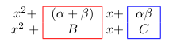

In Highschool, we learned about how to find the roots of a quadratic equation which can be done in various methods. One of the methods is to factor which I found out is called the “ac method” (at least by Wikipedia).
This method is a simple way to find the roots of a quadratic formula because we transform (i.e. factor) a quadratic equation from $Ax^2+Bx+C=0$ to the form $(x + \alpha)(x + \beta)$. When you have the quadratic equation as a product of binomials (i.e. a product of two terms), then the roots are the negation of each factor.
For instance, if we have the equation $x^2 + 6x - 7 = 0$, then the roots are x = 1 and x = -7. This is because we want to find two numbers that multiply to -7 and add to 6 from the equation to find the factors. So the product of the numbers -1 and 7 is -7 and the sum of the two numbers is 6 satisfying the technique. Therefore, $x^2 + 6x - 7 = 0$ can be written as $(x+7)(x-1)$ and the roots are the negation of the numbers in each factor (i.e. the numbers that make each factor sum to 0): 1 and -7.
I never understood where this technique came from but always just remembered the rule. It was probably taught to me when I first learned the rule back in grade 10 (which was around 10 years ago … I feel old) but I probably paid no attention to it. I have been slowly reading the novel Math Girls and have been learning a lot from it. It’s very embarrassing how I even graduated from University without any solid understanding of the foundations of Math.
Anyhow, in the novel the protagonist is teaching a junior about Mathematical expression and introduced this method which they call the “multiplicative form” and how it expands to the “additive form” (which is just the quadratic equation or the standard form). If we were to begin with the “multiplicative form” (i.e. the product of two binomial factors) and expand, we get the following:
\[\begin{align*} (x + \alpha)(x + \beta) &= 0 \\ x^2 + \alpha x + \beta x + \alpha \beta &= 0 \\ \end{align*}\]Then we can collect the like terms:
\[\begin{align*} x^2 + (\alpha + \beta)x + \alpha \beta &= 0 \end{align*}\]Overlaying the standard quadratic equation (called “additive form” in the novel) with the rearranged equation above, we have the following:

Which is exactly the “ac method” where $B = \alpha+\beta$ and $C = \alpha \beta$.